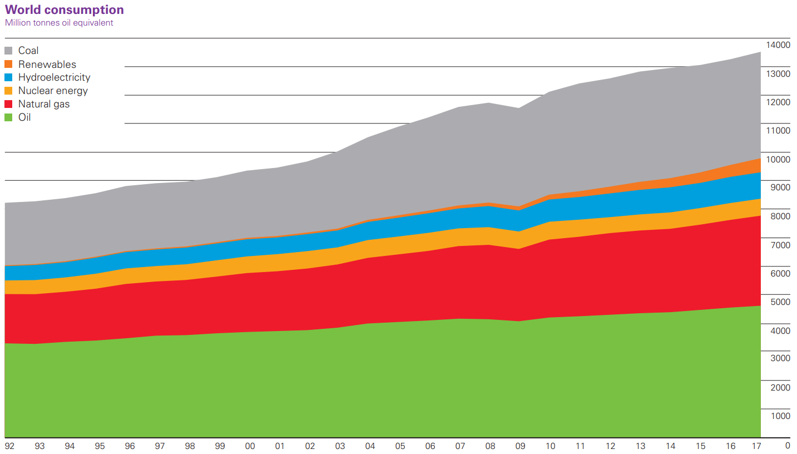
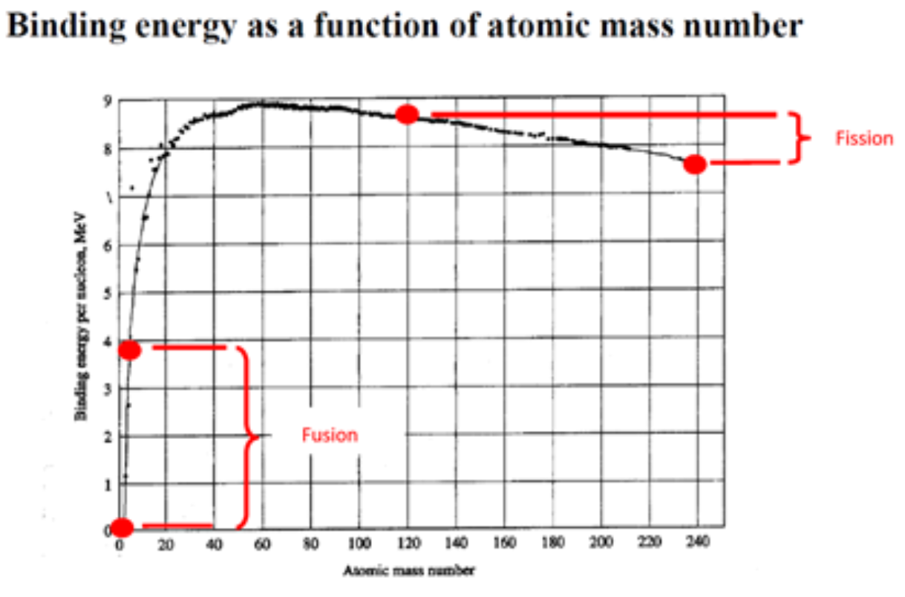
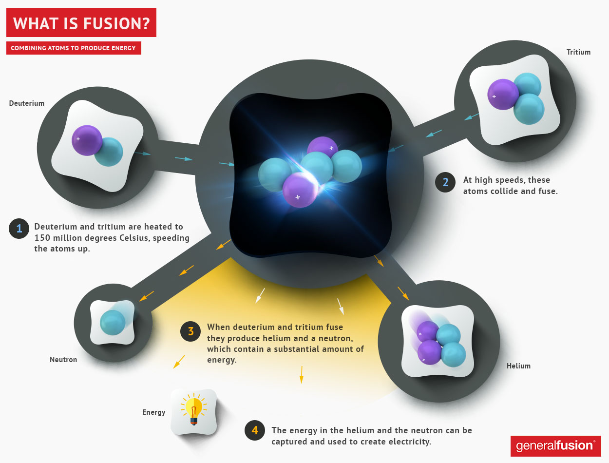
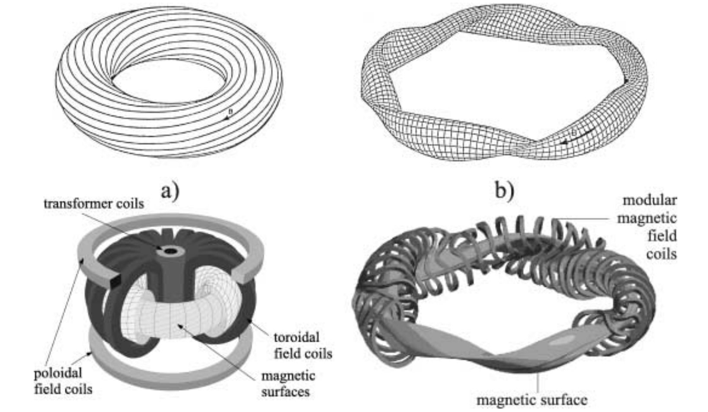
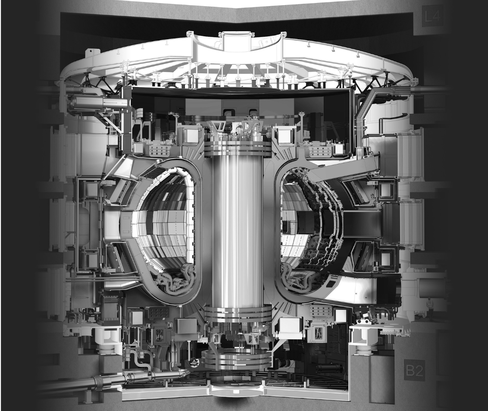

The modern world has advanced remarkably in the fields of information technology, medicine, and business over the past several decades; they are almost unrecognizable compared to what they were 50 years ago. The energy sector, however, has made little significant progress in this time, despite the world’s energy needs growing rapidly (by 16.6% from 2007-2017). In 2017, the BP Statistical Review of World Energy reported that 34% of the world’s total energy consumption came from oil, 27% from coal, and 23% from natural gas. By comparison, cleaner, renewable energy sources were used far less; nuclear energy accounted for 4.4% of energy consumption, hydro for 6.8%, and other renewables for 3.6% (Figure 1). While other fields have made significant progress, the majority of the world’s energy needs are still being met by sources from the 1800s, despite their now well-known impact on the environment and climate change. Why is this the case? While we have developed new renewable and clean energy sources, none of them have been able to replace the old ones. Part of the reason is efficiency. While solar cells and wind turbines, for example, act as unlimited, clean, and renewable energy sources, they have yet to be produced with a high enough efficiency and cannot consistently produce/store enough energy to revolutionize the energy sector. Nuclear energy can sustain the necessary outputs, with the necessary efficiency, but the effects of their radioactive waste—as seen in recent events such as Fukushima—cause people to fear them and protest their construction. Are we stuck with these outdated, harmful fuel sources? Not necessarily. There is a strong contender for the ultimate, clean, unlimited energy supply on the horizon: nuclear fusion.
 (Figure 1). World energy consumption by power source over time. x-axis is year. y-axis is energy in millions tonnes oil equivalent. Retrieved from here.
Nuclear fission and fusion produce their energy by exploiting one of the key principles of Einstein’s special relativity. Einstein discovered that mass and energy are equivalent and inter-convertible. A good way to think of this principle is to compare it to money. Mass and energy are like the money of the universe, just different currencies. Nuclear reactions, which drive fission and fusion reactors, can act as currency exchangers. When we combine or divide atoms, the products may have a different mass than what was started with. If the new mass is lower, then what was lost was exchanged for energy. If the new mass is higher, then what was gained was taken away from the available energy. For nuclear power to work, we want to gain energy, so we focus on reactions with decreasing mass. For heavier atoms, splitting the atom into two lighter atoms will release energy and is referred to as fission This is the process through which current nuclear reactors produce energy. For lighter atoms, smashing two atoms together to form a single, heavier atom will release energy and is referred to as fusion.
 (Figure 2). y-axis relates to energy released by reaching the atom. x-axis is mass of atom. Any movement upwards along the y-axis means energy is released. Fusion moves right along the x-axis while fission moves left along the x-axis. Retrieved from [2].
Looking at (Figure 2), we can see that the graph changes much more quickly in the fusion range than the fission range, as fusion for light elements produces much more energy than fission for heavier elements. Fusion reactions proposed for power plants use heavy forms of hydrogen, called deuterium and tritium, as fuel. Deuterium is present in about 0.016% of water in the Earth’s oceans, meaning there is a virtually unlimited supply (it is already used in all of Canada’s fission reactors). Tritium is unstable and hard to find in nature, but can be created from lithium. The fusion reaction itself produces helium-4 and a single neutron (Figure 3). This neutron is absorbed by structural components of the reactor making them weakly radioactive and becoming half as radioactive every 100 years. This is the only source of radioactive waste from a fusion reactor. A fission reactor, by contrast, uses isotopes of uranium and plutonium which are much rarer and likely to have been depleted within 300 years.[2] The products of fission also include several neutrons and remaining atoms which are also radioactive, but becoming half as radioactive every 100,000 years. The production of multiple neutrons is extremely dangerous in the sense that if they are not controlled, they will set off more fission reactions, scaling upwards until all the fuel is spent. This causes a massive explosion and is the main principle behind the functioning of a nuclear bomb. If a fission reactor loses control over the temperature of its fuels, they will heat to the point of melting and escape the reactor in a meltdown (which is what occurred in Fukushima). In a fusion reactor, the reaction requires a great deal of heat to continue and cannot sustain itself without heat input, so if control over temperature is lost then the reactor cools and fusion stops - as a result, melt-down events are impossible with fusion reactors. Fusion is also the mechanism by which stars such as our Sun produce energy and shine. In the act of harnessing fusion for power plants, we seek to replicate the power of the Sun on Earth.
 (Figure 3). Net fusion reaction. Retrieved from here.
In order for atoms to fuse, they must be under immense pressure, or be colliding with one another at extremely high speeds. At such speeds the temperature of the reactants is incredibly high, in current reactor designs as much as 10x the temperature of the Sun. This immense heat causes the electrons to be stripped from the atoms, creating an electrically charged gas called plasma, which is the 4th state of matter. This presents a unique problem – we have a substance we must control but will melt through any material used to contain it. A solution is possible, however, as the charge on plasma may allow us to control this state of matter using strong magnetic fields (Figure 4). The process of using these magnetic fields to levitate the plasma away from the reactor walls is called magnetic confinement. The electromagnets used to create the necessary fields are kept at temperatures of close to -270℃, making the inside of a fusion reactor a unique combination of the hottest and coldest temperatures in the universe.
 (Figure 4). Depiction of magnetic confinement in fusion reactor. Magnetic coils encase a plasma (magnetic surface) conforming it to the desired shape away from reactor walls. Retrieved from here.
If fusion is superior to all other sources of energy and containment is manageable, where are all the commercial fusion reactors? Consider the needs of the reactor that have been laid out thus far; we require a way to heat the initial atoms to a temperature greater than that of the sun, we must then sustain that temperature, and we must have extremely powerful electromagnets to confine the resulting plasma. The result is that the power required to sustain fusion in current attempts has been greater than the power produced by the reactor. This is obviously less than useful, making current designs not commercially viable.
 (Figure 5). Oct 8 2018 ITER construction update, taken from the side of a crane. To the left is the reactor hall, the circular inner building will house the tokamak. To the right are the operation support buildings for power conversion and cryogenics. Retrieved from here.
(Figure 5). Oct 8 2018 ITER construction update, taken from the side of a crane. To the left is the reactor hall, the circular inner building will house the tokamak. To the right are the operation support buildings for power conversion and cryogenics. Retrieved from here.
 (Figure 6). Cross section of ITER tokamak design. Retrieved from here.
Attempts are ongoing, however, to create the world’s first commercially viable fusion reactor. When the potential payoff is virtually unlimited clean energy there will always be attempts, no matter how difficult the problem. Stationed in Southern France, ITER is the brainchild of 35 nations collaborating to build the world’s biggest tokamak (a doughnut shaped magnetic fusion reactor (Figure 6). It plans to sustain plasma at a temperature of 150 million °C, 10x the temperature in the core of the sun, with electromagnets at a temperature of -269°C. Upon completion, the reactor is expected to return 10x more power than it consumes, far outstripping the current record holder for fusion reactors which only returns 67% of the power it consumes and making ITER the first fusion reactor to produce net energy. ITER plans to achieve its first plasma in 2025, and is currently in phase I of the plant’s assembly (Figure 5). Canada unfortunately backed out of ITER in 2003 due to a lack of funding from the federal government. However, Canada does host a promising new company working towards commercial fusion on a smaller scale. General Fusion is based in Burnaby, British Columbia and is using a Magnetic Target Fusion (MTF) approach in their reactors. As mentioned earlier, for fusion to occur the atoms must be under immense pressure or high temperatures. MTF uses both of these in reactors, heating the atoms to a plasma, confining it using powerful magnets, while applying pressure to the plasma in bursts. General fusion does this using a spherical chamber where the plasma is magnetically confined, and surrounded by liquid lead-lithium. Pistons in the walls of the chamber compress the liquid metal surrounding the plasma, pressurizing the plasma to the point of fusion.
So after all considerations, where does fusion stand? It removes the radiation and explosive hazards associated with current nuclear fission reactors, while promising greater potential energy output. The necessary fuels are readily and vastly abundant on Earth, and in the case of deuterium are already being collected for fission reactors. We know that it is extremely difficult to achieve a functioning, productive reactor. But with future hopes of 10x energy production at ITER and new innovative designs like those at General Fusion we may soon see fusion reactors - clean unlimited energy - become a reality.